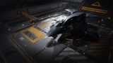

Макс. прыжок с улучшениями
~48 св. лет
Kestrel — боевой корабль для малых площадок, приспособленный для исследований. Он садится где угодно, несёт четыре внешних модуля и принимает топливозаборник 5-го класса. Можно уйти в дальний космос и сканировать звёзды. Но двигатель FSD 4-го размера с боевым корпусом массой 190 т после улучшений даёт лишь около 48 св. лет. Боевая энергоустановка греется, вместимость отсеков скромная. Корпус за 13,8 млн кредитов дорог для такой работы, когда Diamondback Explorer дешевле 2 млн кредитов прыгает дальше. Оценка — 50: корабль справляется, но с компромиссами. Лететь на нём имеет смысл, только если он уже у тебя есть.

Оценка пригодности корабля от 1 до 100 учитывает его полностью улучшенную сборку и сравнивает её с остальными кораблями в этой роли. Подробнее: как оцениваются корабли.
Kestrel Mk II — малый боевой корабль. Три больших оружейных крепления и прочный щит — его главные достоинства. Сними оружие, поставь топливозаборник, ускоритель FSD Стражей и исследовательское оборудование, и корабль сможет выполнять эту роль. Он садится на любом аванпосте, несёт четыре внешних модуля, в том числе теплоотводы, и вмещает полный, хоть и скромный, набор для экспедиции. Ничто не мешает уйти на Kestrel в дальний космос.
Но по соотношению цены и возможностей он слабый исследователь. Его двигатель FSD всего 4-го класса, а боевой корпус массой 190 т тяжёл для таких габаритов. После улучшений дальность около 48 св. лет, примерно как у Cobra Mk III по цене в двадцать раз ниже. Боевая энергоустановка 5-го класса греется сильнее, чем у специализированного исследователя. Вместимость скромная: по одному отсеку 5-го и 4-го размеров, остальные мелкие. Единственный военный отсек на разведке бесполезен. Оценка — 50 : задачу он выполняет, но за возможности, которые в экспедиции не нужны, приходится переплачивать.
Двойное назначение. Подойдёт пилоту, у которого уже есть боевой Kestrel и который хочет время от времени ходить в экспедиции без покупки второго корабля. Подходит для экзобиологии и неспешных дальних полётов, садится на малых площадках. Цена оправдана, только если корпус уже куплен.
Что Kestrel даёт в экспедиции:
Проблема в дальности: двигатель FSD 4-го класса на корпусе массой 190 т после улучшений даёт около 48 св. лет. По главному показателю корабль уступает более лёгким и дешёвым исследователям. Боевая энергоустановка греется, штатный топливный бак 4-го размера ограничивает число прыжков без заправки, а единственный отсек 5-го размера позволяет поставить топливозаборник не выше 5-го класса. Это не плохой корабль, но как исследователь он посредственный и дорогой. Ту же задачу можно решить за гораздо меньшие деньги.
Малый боевой корабль, за исследовательские возможности которого приходится переплатить. Дальность около 48 св. лет с улучшениями, горячая энергоустановка и тесные отсеки ограничивают оценку 50 баллами. Реальные плюсы — малая площадка и четыре внешних крепления.
50/100 — итог по критериям, важным для исследователя. У каждого критерия есть вес (доля от 100). Баллы зависят от результата корабля в сравнении с остальными. Сумма баллов даёт итоговую оценку.
| Критерий | Баллы | Почему столько |
|---|---|---|
| Дальность прыжка с улучшениями | 16/35 | Двигатель FSD 4-го класса и боевой корпус массой 190 т после улучшений дают около 48 св. лет даже с SCO и ускорителем Стражей. Примерно столько же дают Cobra Mk III или Adder за малую часть цены. Diamondback Explorer (около 68) и специализированные средние корабли (около 62–85) далеко впереди. Это самый весомый критерий и главное ограничение Kestrel. |
| Нагрев | 8/15 | Боевая энергоустановка 5-го класса на корпусе массой 190 т греется сильнее, чем у специализированных исследователей. «Низкое выделение тепла» 5-й ступени, «Рассеивание тепла» и две теплоотводные катапульты на четырёх внешних креплениях помогают при заправке, но до Dolphin и Diamondback кораблю далеко. |
| Запас топлива и автономность | 7/10 | Штатный бак 4-го размера ограничивает число прыжков между заправками, а единственный дополнительный отсек 5-го размера задаёт максимальный класс топливозаборника. Заправляться придётся немного чаще, чем на специализированном корабле с более крупными баком и топливозаборником. |
| Кабина и обзор | 6/10 | Боевая кабина даёт достаточный обзор вперёд для общего сканирования и подлёта к поверхности. Но ни панорамы Asp Explorer, ни прозрачного пола для посадок у биосигналов с первого раза нет. В лучшем случае середина рейтинга. |
| Отсеки | 10/20 | Семь дополнительных отсеков (5·4·3·2·2·2·1) и один военный отсек 4-го класса. Помещаются топливозаборник 5-го класса, ускоритель Стражей, два блока авторемонта, ангар планетохода и сканер. Комплект полный, но места впритык: всего по одному отсеку 5-го и 4-го размеров, резерв невелик, а военный отсек для исследований бесполезен. |
| Удобство и цена | 3/10 | Плюсы: малая площадка, не нужны ранг и разрешение. Но корпус около 13,8 млн кредитов (около 30 млн с оснащением) за дальность около 48 св. лет невыгоден: Diamondback Explorer дешевле 2 млн прыгает намного дальше. Место экипажа одно. Имеет смысл переоборудовать только уже купленный боевой корпус. |
| Взвешенный итог | 50/100 | Сумма совпадает с общей оценкой корабля в этой роли. |
Вес критериев отражает приоритеты авторов руководства, а не игровую формулу. Длинные полосы показывают, в чём корабль набрал больше всего возможных баллов, короткие — где он их потерял. Подробнее: как оцениваются корабли.
Таблицы сравнивают корабли именно для исследованийи разделяют их по размеру посадочной площадки. Столбец «Вместимость» показывает суммарную вместимость дополнительных отсеков для сканеров, авторемонта и топлива. Оценка пригодности выставляется по шкале от 1 до 100, как и на остальных страницах.
| Корабль | Класс | «Вместимость» | Плюсы и минусы | Оценка |
|---|---|---|---|---|
| Diamondback Explorer | Малая | ~60 т | Выше оценка; нагрев; удобство и ценаОтсеки | 88 |
| Dolphin | Малая | ~88 т | Выше оценка; нагрев; удобство и ценаДальность прыжка | 80 |
| Diamondback Scout | Малая | ~32 т | Выше оценка; нагрев; удобство и ценаОтсеки | 74 |
| Imperial Courier | Малая | ~34 т | Выше оценка; дальность прыжка; обзорОтсеки | 73 |
| Cobra Mk V | Малая | ~110 т | Выше оценка; отсеки; удобство и ценаДальность прыжка | 72 |
| Cobra Mk III | Малая | ~64 т | Выше оценка; обзор; отсекиНагрев | 71 |
| Hauler | Малая | ~26 т | Выше оценка; удобство и цена; дальность прыжкаОтсеки | 62 |
| Adder | Малая | ~30 т | Выше оценка; удобство и цена; автономностьОтсеки | 60 |
| Kestrel Mk II этот | Малая | ~70 т | — корабль, с которым сравниваем | 50 |
Из девяти оценённых кораблей для малых площадок лидирует Diamondback Explorer (88). Все корабли в этой таблице садятся там же, где и Cobra Mk V: это прямые конкуренты при покупке.
| Корабль | Класс | «Вместимость» | Плюсы и минусы | Оценка |
|---|---|---|---|---|
| Anaconda | Большая | ~470 т | Выше оценка; автономность; отсекиОбзор | 94 |
| Caspian Explorer | Большая | ~434 т | Выше оценка; автономность; обзорУдобство и цена | 94 |
| Imperial Clipper | Большая | ~250 т | Выше оценка; отсеки; удобство и ценаДальность прыжка | 63 |
| Orca | Большая | ~194 т | Выше оценка; обзор; автономностьДальность прыжка | 63 |
| Beluga Liner | Большая | ~370 т | Выше оценка; отсеки; автономностьДальность прыжка | 58 |
Из пяти оценённых кораблей для больших площадок лидирует Anaconda (94). По характеристикам большие корабли сильнее, но им нужны более крупные площадки и больший бюджет.
| Корабль | Класс | «Вместимость» | Плюсы и минусы | Оценка |
|---|---|---|---|---|
| Mandalay | Средняя | ~154 т | Выше оценка; дальность прыжка; нагревОтсеки | 96 |
| Krait Phantom | Средняя | ~190 т | Выше оценка; отсеки; нагревУдобство и цена | 93 |
| Asp Explorer | Средняя | ~130 т | Выше оценка; обзор; отсекиДальность прыжка | 86 |
| Krait Mk II | Средняя | ~230 т | Выше оценка; отсеки; удобство и ценаНагрев | 80 |
| Python | Средняя | ~294 т | Выше оценка; автономность; отсекиДальность прыжка | 75 |
| Asp Scout | Средняя | ~74 т | Выше оценка; удобство и цена; нагревДальность прыжка | 70 |
| Type-6 Transporter | Средняя | ~114 т | Выше оценка; удобство и цена; отсекиДальность прыжка | 68 |
| Corsair | Средняя | ~318 т | Выше оценка; удобство и цена; отсекиДальность прыжка | 58 |
| Type-11 Prospector | Средняя | ~288 т | Выше оценка; автономность; отсекиДальность прыжка | 55 |
Из девяти оценённых кораблей для средних площадок лидирует Mandalay (96). Сравнение показывает отличия по характеристикам, но эти корабли относятся к другому классу посадочных площадок.
Корпус Kestrel стоит около 13,8 млн кредитов. Для исследовательской задачи это дорого, хотя ранг и разрешение не нужны. Полный экспедиционный комплект включает топливозаборник 5-го класса, ускоритель Стражейускоритель Стражей блока авторемонта, ангар планетохода и сканер. Общая цена — примерно 30 млн кредитов.
В этом и проблема: Diamondback Explorer даёт около 68 св. лет в полностью улучшенной сборке примерно за 12 млн кредитов, а Cobra Mk III прыгает на ту же дистанцию, что Kestrel, за малую долю его цены. Kestrel оправдан только во второй роли, когда уже куплен и окупился в бою.
Не покупай Kestrel ради исследований. Купи для боя и при случае переоборудуй для экспедиции. Как самостоятельный исследователь за примерно 30 млн кредитов он уступает намного более дешёвым кораблям и по дальности, и по цене.
Исследовательские сборки на малом боевом корпусе. Начальная требует только покупки и уже годится для прыжков. С модулями класса A получается лучший экспедиционный вариант без инженерии. Улучшенная сборка для дальних полётов максимально облегчена и построена вокруг двигателя SCO 4-го размера и ускорителя Стражей. Ниже план оснащения и расходы.
| Отсек | Начальная · только покупка | Класс A · без улучшений | С инженерными улучшениями | Примечания |
|---|---|---|---|---|
| Внешние крепления | ||||
| Крепление 1 | 0I теплоотводную катапульту | 0I теплоотводную катапульту | G1 Дополнительный боезапас (без экспериментального эффекта) | Необязательно. Дополнительный боезапас даёт больше теплоотводов. Они снимают нагрев при скрытном ходе и в паузах использования тепловой вентиляции с горячей боевой энергоустановкой. |
| Крепление 2 | — | 0I теплоотводную катапульту | G1 Дополнительный боезапас (без экспериментального эффекта) | Вторая теплоотводная катапульта. Боевая энергоустановка Kestrel горячее, чем у специализированных исследователей, так что дополнительные теплоотводы не лишние. |
| Крепление 3 | — | 0A Усилитель щита | G5 Усиленная конструкция + Суперконденсаторы | Один лёгкий усилитель заметно увеличивает прочность двухконтурного щита для посадок. «Усиленная конструкция» и «Суперконденсаторы» дают наибольший прирост на тонну. |
| Основные модули | ||||
| Обшивка | Лёгкий сплав | Лёгкий сплав | Облегчение 5-й ступени (без экспериментального эффекта) | |
| Энергетическая установка | 5E Энергетическая установка | 5D Энергетическая установка | G5 Низкое выделение тепла + Рассеивание тепла | Установка 5D снижает массу. Оружия нет, мощности хватает. «Низкое выделение тепла» уменьшает нагрев и энергопотребление, а «Рассеивание тепла» отводит ещё больше тепла. |
| Маневровые двигатели | 5E Маневровые двигатели | 5D Маневровые двигатели | G5 Чистая настройка двигателей + Форсированные двигатели | 5D маневровые двигатели; «Чистая настройка» помогает держать температуру при полётах у планет, а «Форсированные двигатели» повышают скорость на форсаже для выхода из гравитационных колодцев. |
| Рамочно-сместительный двигатель (FSD) | 4E Рамочно-сместительный двигатель (FSD) | 4A Рамочно-сместительный двигатель (FSD) | G5 Увеличенная дальность + Управление массой | Главное в сборке — двигатель SCO 4A: он даёт максимум дальности и быстрые перелёты в системах. «Увеличенная дальность» и «Управление массой» дают основную прибавку дальности, но двигатель 4-го размера всё равно задаёт предел. |
| Система жизнеобеспечения | 1E Система жизнеобеспечения | 1D Система жизнеобеспечения | G5 Облегчение (без экспериментального эффекта) | Класс D экономит массу, «Облегчение» ещё немного её снижает; у системы жизнеобеспечения нет экспериментального эффекта. |
| Распределитель энергии | 5E Распределитель энергии | 5D Распределитель энергии | G5 Упор на двигатели + Групповые конденсаторы | Без оружия класса 5D достаточно. «Упор на двигатели» и «Групповые конденсаторы» дают запас в конденсаторе двигателей для повторных форсажей при заходе на посадку. Необязательно. |
| Сенсоры | 2E Сенсоры | 2D Сенсоры | G5 Облегчение (без экспериментального эффекта) | Поставь класс D и «Облегчение». Для исследований дальность сенсоров не нужна: лучше сэкономить массу. |
| топливный бак | 4C топливный бак | 4C топливный бак | (нет чертежа улучшения) | Штатный бак 4C. Вместимость фиксирована, инженерных улучшений нет. Из-за бака 4-го размера запаса хватает на меньшее число прыжков, чем у специализированного исследователя. |
| Военные отсеки | ||||
| Военный отсек 1 | — | 4D Модуль усиления оборудования | (нет чертежа улучшения) | В этот военный отсек не поставить топливозаборник, ускоритель или сканер. Для исследователя это лишняя масса. Лёгкий Модуль усиления оборудования защищает оборудование при жёстких посадках в экзобиологии. Можно оставить отсек пустым и немного выиграть в дальности. |
| Дополнительные отсеки | ||||
| Размер 5 | 5E Топливозаборник | 5A Топливозаборник | G5 Защищённый (без экспериментального эффекта) | Необязательно. «Защищённый» повышает прочность топливозаборника, но не скорость работы. 5-й класс — максимум для самого крупного отсека корабля. |
| Размер 4 | — | 4H ускоритель FSD Стражей | (нет чертежа улучшения) | ускоритель FSD Стражей (4-й размер) даёт фиксированную прибавку к дальности. Разблокируется на объекте Стражей, а не покупается. Ключевой модуль, инженерных улучшений нет. |
| Размер 3 | — | 3C Генератор двухконтурного щита | G5 Улучшенная энергоэффективность + Низкое энергопотребление | Лёгкий двухконтурный щит 3-го размера быстро восстанавливается и смягчает удары при посадке. «Улучшенная энергоэффективность» и «Низкое энергопотребление» снижают расход энергии (двухконтурные щиты бывают только класса C). |
| Размер 2 | — | 2A блок авторемонта (AFMU) | G5 Защищённый (без экспериментального эффекта) | Модуль 2-го размера (блок авторемонта) ремонтирует оборудование в дальнем полёте, а «Защищённый» повышает его прочность. |
| Размер 2 | — | 2H Ангар для планетохода | (нет чертежа улучшения) | Лёгкий ангар 2-го размера на один планетоход для экзобиологии и вылазок к сооружениям Стражей. У ангаров нет чертежей улучшения. |
| Размер 2 | — | 2A блок авторемонта (AFMU) | G5 Защищённый (без экспериментального эффекта) | Второй блок авторемонта (AFMU) для резерва: тогда блоки смогут ремонтировать друг друга. «Защищённый» повышает прочность. |
| Размер 1 | — | 1I Подробный сканер поверхности | G5 Увеличенный радиус сканирования зондов (без экспериментального эффекта) | Необязательно. «Увеличенный радиус сканирования зондов» расширяет охват каждого зонда. Сканер составляет карты планет для получения данных. |
| Планировщики и экспорт | ||||
| Открыть в Coriolis | открыть | открыть | открыть | Открывает сборку на coriolis.io. |
| Открыть в EDSY | открыть | открыть | открыть | Открывает сборку на edsy.org. |
| Скопировать SLEF | Копирует выбранную сборку в формате экспорта корабельного оснащения (SLEF). | |||
Kestrel с улучшениями прыгает примерно на 48 св. лет. Для такой цены мало: двигатель FSD 4-го размера с боевым корпусом массой 190 т не сравнится со специализированным исследователем. Ускоритель FSD Стражей даёт фиксированную прибавку к дальности, а топливозаборник 5-го класса обеспечивает заправку. Без этих двух модулей сборка не имеет смысла. Единственный военный отсек бесполезен для исследователя, так что модуль усиления оборудования в нём необязателен.
Купи корпус (около 13,8 млн кредитов) и поставь только самое необходимое: 5E топливозаборник в отсек пятого размера. Основные модули оставь класса E (двигатель FSD пока штатный 4E ), оставь штатный 4C топливный баки поставь 0I теплоотводную катапульту для сброса тепла. Штатную обшивку из лёгкого сплава оставь : без лишних затрат и массы.
Остальные отсеки пока оставь пустыми. Ускоритель FSD Стражей, блоки авторемонта, ангар планетохода, подробный сканер поверхности и посадочный щит добавишь при переходе на класс A.
Сними оружие с трёх больших и двух малых креплений. Исследователю оружие не нужно. Из внешнего оборудования хватит одной теплоотводной катапульты .
Что первым перевести на класс A для исследователя на малом боевом корпусе:
Полностью оснащённый Kestrel класса A — автономный исследователь для малых площадок. Но боевой корпус и двигатель FSD 4-го размера дают такую же дальность, как у гораздо более дешёвых кораблей. Оставь военный отсек пустым ради дальности или поставь туда лёгкий модуль усиления оборудования на случай жёстких посадок.
Стандартная схема инженерных улучшений исследователя. Felicity Farseer на максимальном уровне улучшает двигатель FSD; Professor Palin (или Mel Brandon) отвечает за «Чистую настройку» маневровых двигателей. Закрепи чертежи для удалённого применения с 1-й по 5-ю ступень.
Примерные показатели для трёх вариантов. Точный результат зависит от оснащения:
| Модуль | Чертёж | Экспериментальный эффект | Инженер |
|---|---|---|---|
| Рамочно-сместительный двигатель (FSD) (4) | Увеличенная дальность (5-я ступень) | Управление массой | Felicity Farseer |
| Маневровые двигатели (5) | Чистая настройка двигателей (5-я ступень) | Форсированные двигатели | Professor Palin / Mel Brandon |
| Энергетическая установка (5) | Низкое выделение тепла (5-я ступень) | Рассеивание тепла | Hera Tani |
| Система жизнеобеспечения (1) | Облегчение (5-я ступень) | — | Etienne Dorn |
| Сенсоры (2) | Облегчение (5-я ступень) | — | Bill Turner / Juri Ishmaak |
| Генератор щита (3) | Улучшенная энергоэффективность (5-я ступень) | Низкое энергопотребление | Lei Cheung |
| Усилитель щита (0) | Усиленная конструкция (5-я ступень) | Суперконденсаторы | Didi Vatermann |
| Распределитель энергии (5) | Упор на двигатели (5-я ступень) | Групповые конденсаторы | The Dweller |
| Обшивка | Облегчение (5-я ступень) | — | Selene Jean |
После улучшений Kestrel прыгает примерно на 48 св. лет, несёт полный, хоть и тесно упакованный экспедиционный комплект и садится на малых площадках. Но стоит всё это около 30 млн кредитов. Двигатель FSD 4-го размера задаёт предел. Никакими улучшениями не догнать более лёгких специализированных исследователей. Штатная обшивка из лёгкого сплава с облегчением и основные модули класса D снимают всё, что можно. И всё равно дальность такая же, как у намного более дешёвых кораблей. Ограничение здесь в цене, а не в возможности летать.
Добраться можно до любой дальней цели, но прыжков будет больше, чем на специализированном исследователе. Для серьёзного перелёта к краю галактики возьми Mandalay или Krait Phantom вместо Kestrel.
Kestrel Mk II в экспедиции похож на спорткар с прицепом: справится, но инструмент выбран неудачно и дорого. Малая площадка, четыре внешних крепления и полный комплект — реальные плюсы. И всё же около 48 св. лет за 30 млн кредитов проигрывают по дальности и цене таким вариантам, как Diamondback Explorer, Cobra Mk III или любой специализированный исследователь. Оценка — 50 : способен, но разумен только как вторая роль уже купленного боевого корабля.
Авторы оригинала сверили данные со следующими источниками.